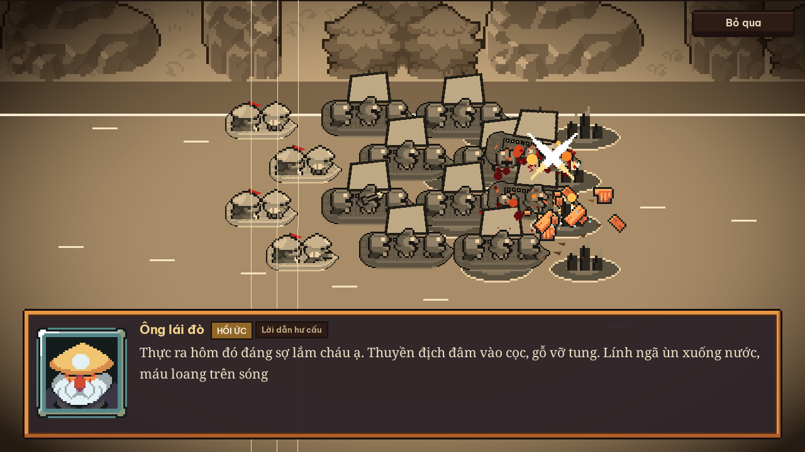
Nghe chuyện, xem lại hồi ức
Người giữ ký ức kể, cảnh xưa hiện ra màu nâu cũ: thuyền nhử địch vào sông, triều rút, cọc lộ, thuyền vỡ.
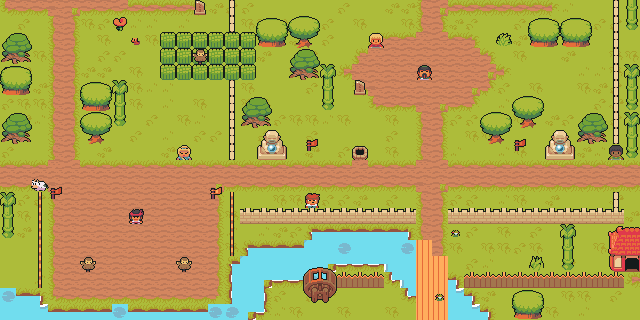
Đi bộ qua đất Việt xưa, nghe người giữ ký ức kể chuyện, nhặt từng mảnh tư liệu rồi tự tay dựng lại dòng thời gian. Học sử càng nhiều, nhân vật càng mạnh.
Chơi ngay trên trình duyệt máy tính, lần đầu tải khoảng 6 MB. Có tài khoản thì tiến trình được lưu và lên bảng xếp hạng.Phím hay dùng: J lộ trình · K tu luyện · F đánh quái · C câu cá · H gọi chiến mã · B túi đồ · G sổ bóng giặc · P bạn chơi · L chat. Mọi bảng khác nằm trong nút ba gạch ở góc phải trên.
Đến gần, thấy chữ E hiện dưới chân thì bấm E để nói chuyện. Mỗi người giữ một việc.
Già làng ở chỗ xuất phát. Giao việc, nhận báo cáo sau mỗi chuyến đi, cùng bạn xếp dòng thời gian rồi mở cổng sang màn sau.
Đứng giữa mỗi di tích. Thấy dấu chấm than trên đầu là có chuyện để nghe; nghe xong mới mở các việc khác của di tích.
Đặt câu hỏi về di tích: chọn đáp án, xếp thứ tự, nối cặp, chỉ trên bản đồ. Đúng ngay lần đầu được nhiều điểm nhất.
Đứng cạnh chỗ xuất phát, bán vũ khí, áo, mũ, giày, găng và cần câu tre bằng tiền quan.
Kể lại trận đánh có thật ở vùng đó, kèm nguồn, rồi hỏi một câu. Trả lời đúng được thưởng kinh nghiệm và tiền quan.
Ngồi bên sông với bếp lửa. Kể chuyện sông nước trong sử, bán cần câu; mang cá tới bếp để nướng.
Nói vài câu về nơi bạn đang đứng, đôi khi là mẹo đánh quái ở vùng đó.
Ở võ đài có chín võ sinh để đấu tập. Trên đường có người mời đấu: bấm Y để nhận, N để thôi.
Dựng ở map đầu, ghi 20 người nhiều điểm học sử nhất và 20 người sức mạnh cao nhất trên máy chủ.
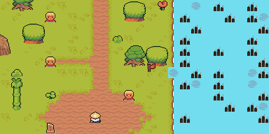
Từ Ngô Quyền trên sông Bạch Đằng đến ba lần đánh Mông Nguyên. Tám di tích, từ Đường Lâm tới bãi cọc Yên Giang.
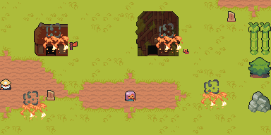
Khởi nghĩa Lam Sơn, từ những ngày thiếu lương trên núi đến ải Chi Lăng và áng văn Bình Ngô đại cáo.
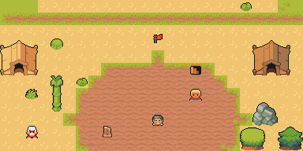
Cây đa Tân Trào, Quảng trường Ba Đình, chiến dịch Biên giới và 56 ngày đêm ở lòng chảo Điện Biên.

Người giữ ký ức kể, cảnh xưa hiện ra màu nâu cũ: thuyền nhử địch vào sông, triều rút, cọc lộ, thuyền vỡ.
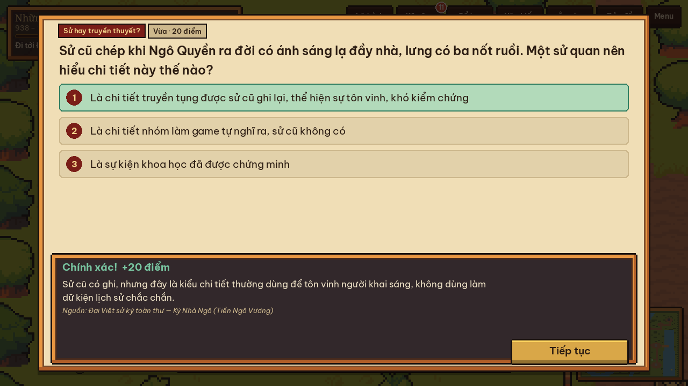
Chọn đáp án, xếp thứ tự sự kiện, nối cặp, chỉ vị trí trên bản đồ. Sai thì đọc lời giải, câu đó sẽ quay lại trong phần ôn tập.
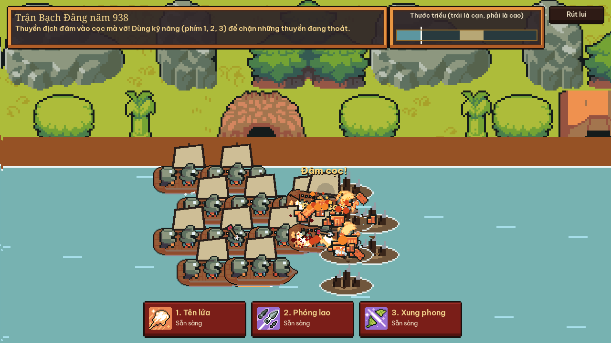
Cắm cọc rồi chờ con nước ở Bạch Đằng, phục kích ở Chi Lăng, siết vòng vây ở Điện Biên. Mỗi trận diễn đúng cách đánh của trận thật.
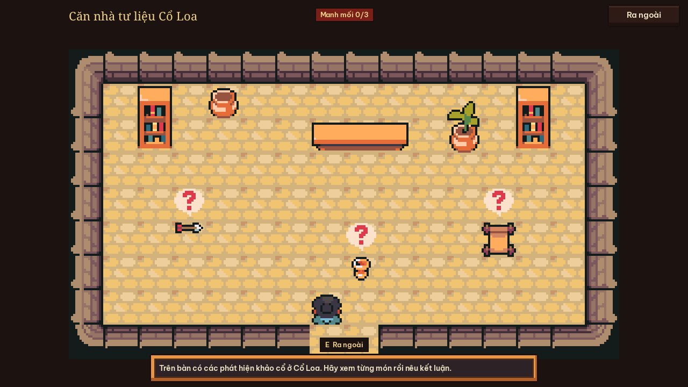
Bước vào nhà 48 Hàng Ngang hay hầm chỉ huy ở Mường Thanh, xem từng tư liệu rồi nêu kết luận của bạn.
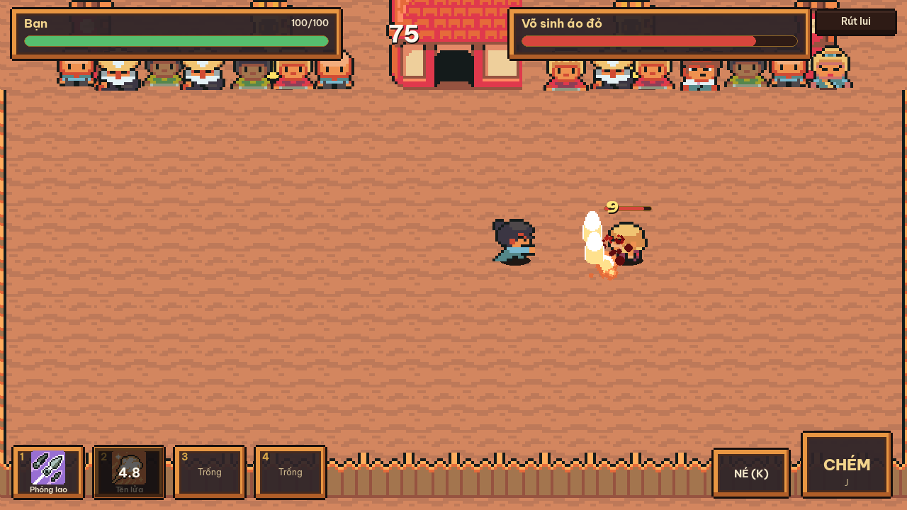
Trả lời đúng, đóng dấu di tích thì có điểm kỹ năng để học chiêu; chìm vào hồi ức, ghép tư liệu thì có tinh hoa để đột phá cảnh giới.
Bóng giặc, cảnh giới, tiền quan là phần trò chơi. Thứ làm nhân vật mạnh lên thật sự là những gì bạn học được.
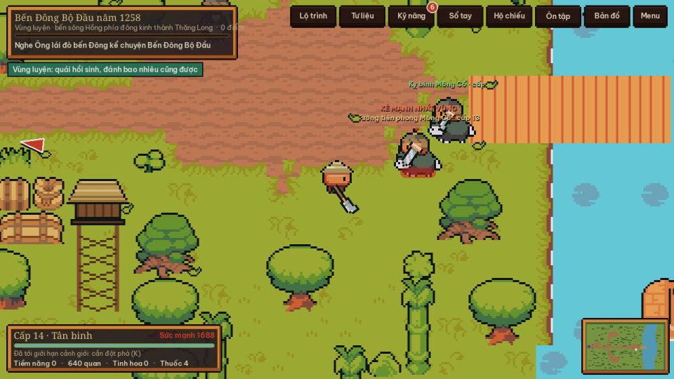
Mười hai vùng mở dần theo bài học: sông Như Nguyệt 1077, bến Đông Bộ Đầu 1258, Chương Dương 1285, biển Vân Đồn 1288, Diễn Châu 1425, Xương Giang, vòng vây Đông Quan, ải Lê Hoa 1427, đèo Bông Lau và sông Lô 1947, Đông Khê 1950, Mường Thanh. Mỗi vùng có người kể chuyện kèm nguồn và một câu hỏi trước khi luyện tay.
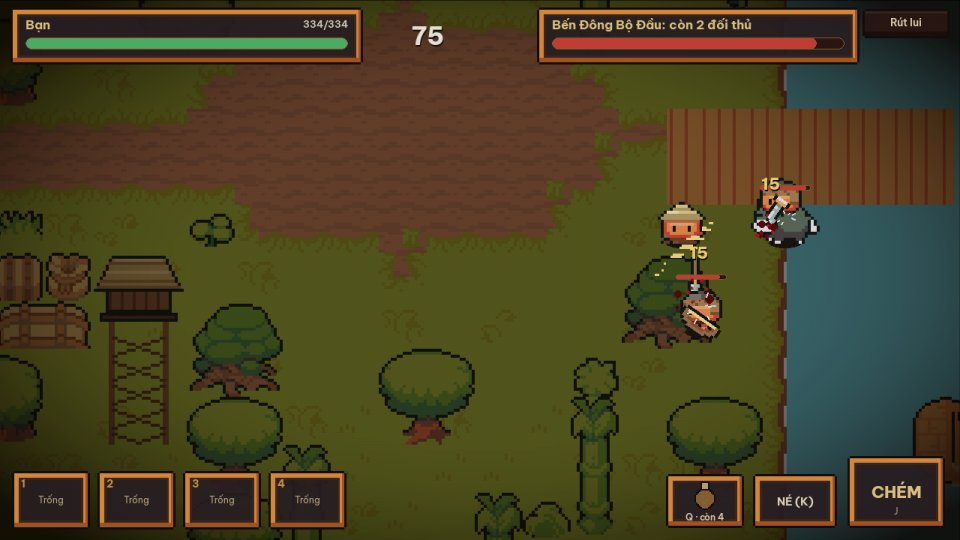
Nón lá, khăn chít, giáp vảy, ủng da; giáo đâm thẳng, đại đao bổ rộng, nỏ và cung bắn tên bay thật.
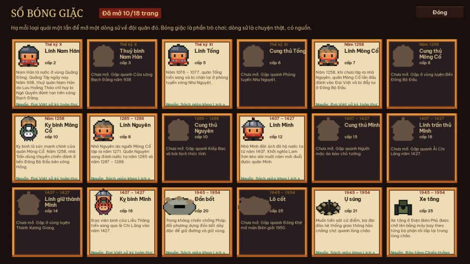
Hạ mỗi loại quân lần đầu thì mở một dòng sử về đội quân ấy, có ghi nguồn: Nam Hán, Tống, Mông Cổ, Nguyên, Minh, đồn bốt, ụ pháo, tàu chiến và đoàn xe thời chống Pháp.
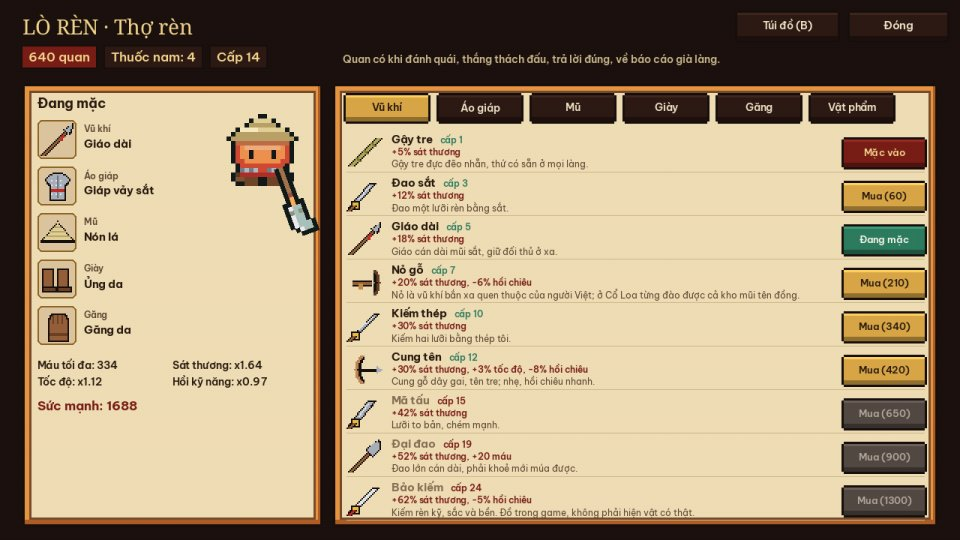
Tiền quan mua đồ, tiềm năng tăng chỉ số. Muốn qua giới hạn cấp phải có tinh hoa, mà tinh hoa chỉ có khi học sử.
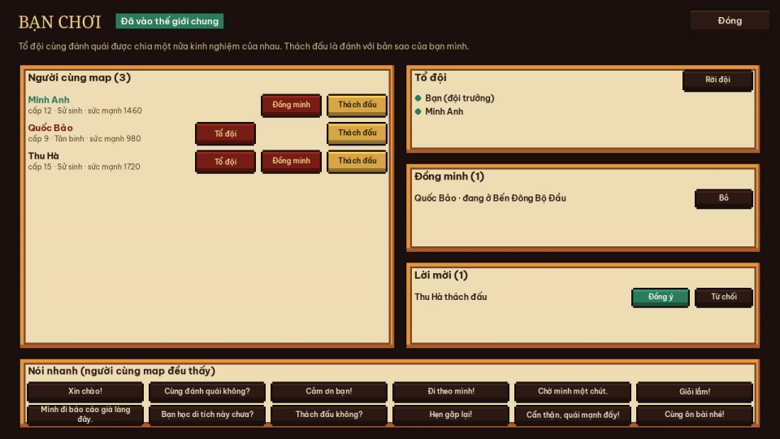
Lời giải của mỗi câu hỏi ghi rõ nguồn. Chỗ nào là truyền thuyết hay lời dẫn hư cấu, game ghi nhãn ngay trên màn hình để bạn không nhầm với sử.